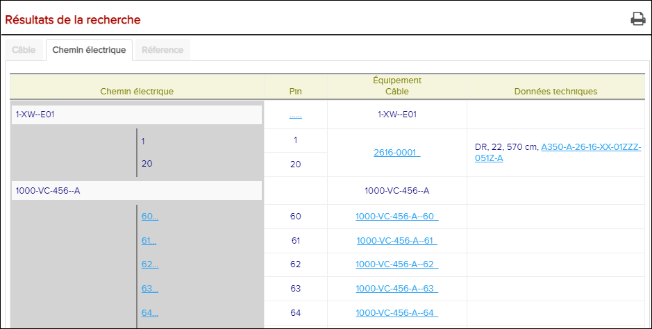

-
Si une boîte de dialogue Cliquez sur une broche ... pour continuer le
chemin électrique , cliquez sur le bouton
OK.
Cette boîte de dialogue indique que le chemin électrique montré a un composant avec plusieurs broches que le signal peut voyager.
Les résultats de la recherche apparaissent dans l'onglet Chemin électrique.

L'onglet chemin électrique
À partir de l'espace Résultats de la recherche, cliquez sur l'icône
 Imprimer les résultats de la recherche pour imprimer
les résultats de la recherche au format PDF.
Imprimer les résultats de la recherche pour imprimer
les résultats de la recherche au format PDF. -
Utilisez les résultats de la recherche dans l'onglet Chemin électrique
comme vous le souhaitez.
Voir au tableau ci-dessous pour certains types d'informations affichées:
Tableau 1. les résultats de recherche du chemin électrique L'identifiant La description L'activité Chemin électrique ...... Indique que le chemin électrique peut continuer au-delà de ce qui est actuellement affiché. Si le chemin électrique continue au-delà de ce qui est montré, en cliquant sur le ...... révèle la prochaine connexion dans le chemin électrique. Autrement, ......disparaît simplement pour signifier que le chemin électrique se termine au composant représenté. En boîte FIN/EIN Représente un composant. Parfois, le symbole est affiché à gauche du FIN / EIN. Affiche des informations sur le composant sélectionné dans l'onglet Equipement. hyperlien pin désignateur... Représente une pin de composant dont le signal peut voyager. Révèle le lien suivant dans le chemin électrique lorsque le signal se déplace à partir de cette broche particulière. Désignateur de broche de texte régulier sous le composant Pour le trajet électrique actuellement affiché, représente la pin du composant au-dessus duquel le signal se déplace. N/A Désignateur de broche de texte régulier au-dessus du composant Pour le trajet électrique actuellement affiché, représente la pin du composant en dessous de laquelle le signal se déplace. N/A Pin Pin désignateur Pin désignateur. N/A ...... Indique que le composant a des pins. Révèle / cache des pins supplémentaires pour un composant qui ne fait pas partie du chemin électrique représenté. Equipment câble Pour FIN / EIN en boîte Numéro d'identification fonctionnelle ou numéro d'identification de l'équipement. Affiche des informations sur le composant sélectionné dans l'onglet Equipement. Pour Pin désignateur. Numéro de câblage. Parfois, la couleur du câblage s'affiche à droite du numéro de fil sous la forme d'une première lettre en surbrillance d'un nom de couleur. (Par exemple: indique que le câblage est rouge  et indique que le câblage est
bleu.)
et indique que le câblage est
bleu.)Affiche des informations sur le câblage sélectionné dans l'onglet câblage. Donnée Technique Pour FIN / EIN en boîte Le nom du composant. N/A Pour désignateur du Pin hyperlié... Schéma de câblage. Ouvre le schéma de câblage sélectionné. Dans les diagrammes SVG, votre sélection peut également être mise en évidence pour la rendre plus facile à localiser. Pour le désignateur de pin de texte normal Type du câblage, mesure de la taille du câblage et de la longueur du câblage. Ouvre le schéma de câblage sélectionné. En outre, votre sélection peut également être mise en évidence dans le diagramme pour faciliter sa localisation.